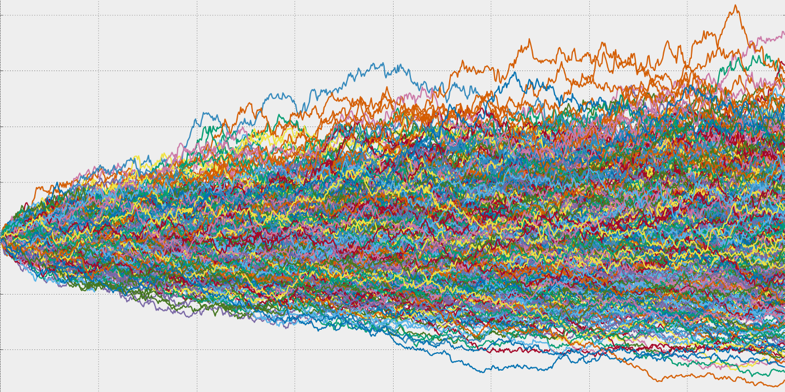
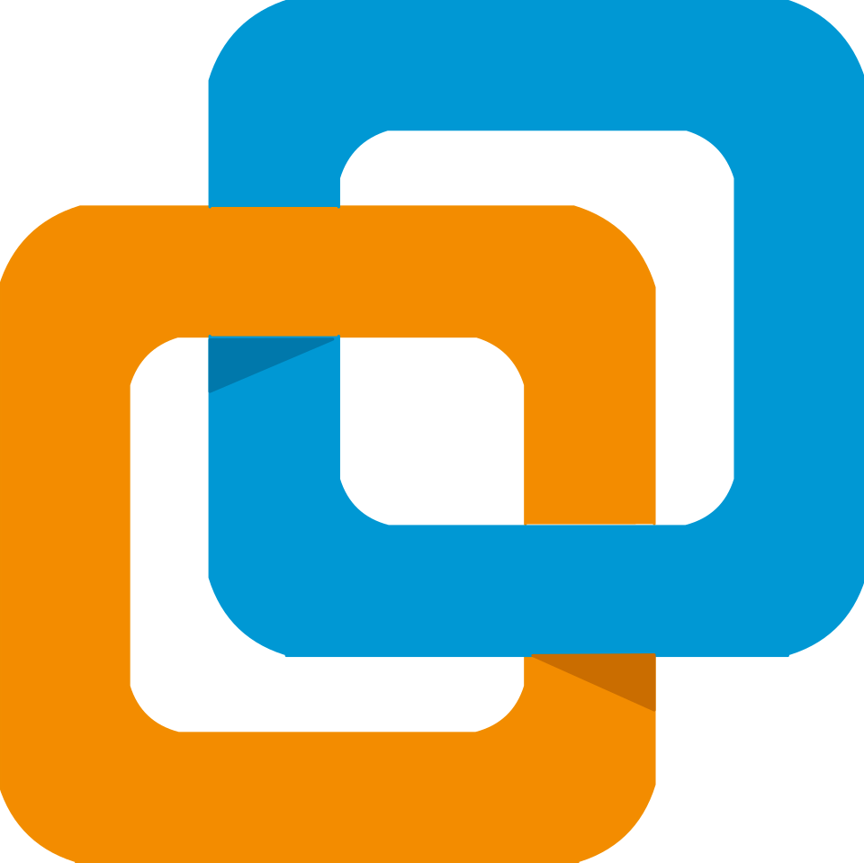
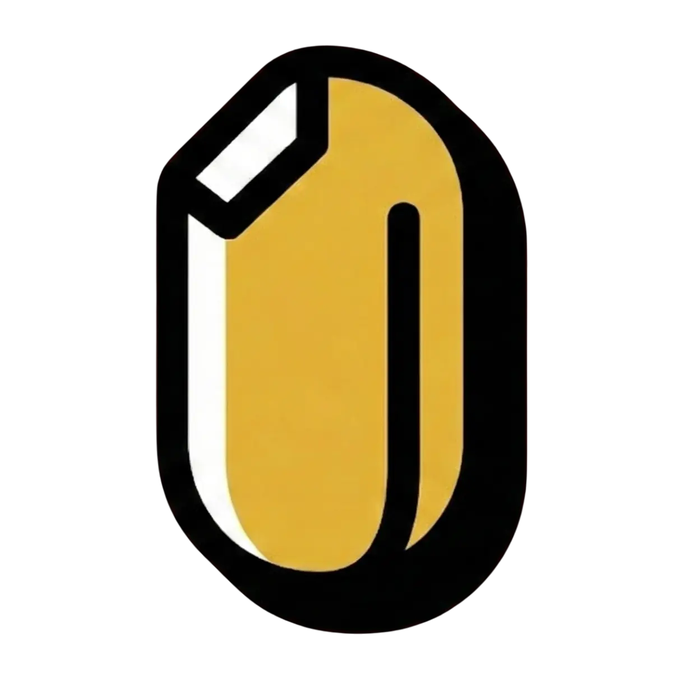

My profile sits between backend engineering, data systems, and infrastructure. I am most effective when a project needs clean APIs, solid data handling, careful deployment, and real technical ownership.
Software engineer · backend · data engineering · cloud
Building backend systems that stay clear, reliable, and production-ready.
I am David Muñoz del Valle, a software engineer with a strong bias toward backend development, data workflows, and cloud infrastructure. I enjoy the layer where architecture, integration, deployment, and product constraints all need to work together without friction.
About
Personal, technical, and grounded in practical software engineering.
Software engineering in Malaga
Strong academic foundation in algorithms, data structures, software modeling, and design applied through practical and collaborative work.
Backend quality with operational awareness
I care about systems that do not stop at implementation. They need to integrate cleanly, deploy well, and stay maintainable under load.
Rust, Python, SQL, cloud, Linux
Rust stands out as a defining technology, while Python, PostgreSQL, Docker, AWS, OCI, and Linux complete the environments where I do most of my work.
Rust
Python
PostgreSQL
FastAPI
Docker
AWS
OCI
Linux
Bash
React
TypeScript
MongoDB
Nginx
Oracle Autonomous Database
Embeddings
RAG
Experience
Production-facing engineering across data, deployment, and platform reliability.
Machine Learning and Data Analysis · BHS Corrugated Spain
Architected scalable PostgreSQL-based data pipelines for extraction, feature engineering, and validation. Improved the production deployment lifecycle of predictive models through CI/CD integration and MLOps practices, helping align data science and engineering in a demanding industrial environment.
Hackathons, collaboration, and fast delivery
Repeated contributor in collaborative projects involving FastAPI, Oracle Autonomous Database, React, Docker, AWS, and OCI. I usually take ownership where backend, deployment, and system integration need to come together quickly.
Projects
Featured work with local visuals, followed by a compact project list.
The featured cards use the images and gif already available in the AUX folder. The rest stay text-first on purpose.
rom
Metaheuristic optimization framework built in Rust with a focus on performance, scalability, and full technical control.
View repository
Computer vision and decision supportPokerHelper
Desktop software centered on computer vision, statistical support, and decision logic for Texas Hold'em play.
View repository LLMs, embeddings, retrieval
LLMs, embeddings, retrieval
Dr. Artificial
Medical assistant prototype with a web interface, Python backend, embeddings, and retrieval workflows aimed at real product utility.
View repository
Infrastructure automationVMware vSphere ESXi Library
CLI toolkit for provisioning, cloning, and destroying virtual machines on ESXi.
View repository

Full-stack calendar platformbasmati
Collaborative calendar and events platform with React, TypeScript, FastAPI, MongoDB, Docker, Nginx, and cloud deployment.
View repositoryBrain
FastAPI backend with secure Oracle Autonomous Database integration for an AI-assisted chat product.
View repositoryWikiMovies
Java and Spring Boot backend project focused on data modeling and business logic with MySQL.
View repositoryMonkey-Pop
React-based web game showing frontend delivery and product polish in a smaller scope.
View repositoryMPS
Java coursework centered on software maintenance, testing, and quality workflows.
View repositoryGestionTaller
Kotlin Android app with database-backed functionality and mobile workflow concerns.
View repositoryPlytix
C# desktop application work developed in an academic setting.
View repositoryMyLeetCode
Algorithmic practice in C with a low-level engineering mindset.
View repositoryBashLinuxC
Simple terminal project for operating systems coursework in C.
View repositoryContact
Available for backend, data, cloud, and integration-heavy work.
If you are looking for a software engineer who is comfortable across APIs, data flows, cloud infrastructure, and fast technical delivery, GitHub is the best place to start.